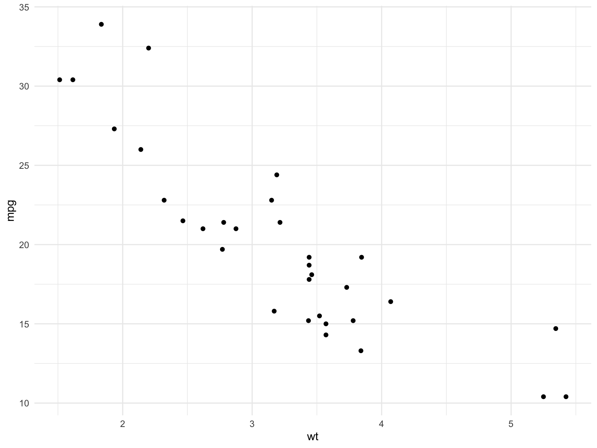
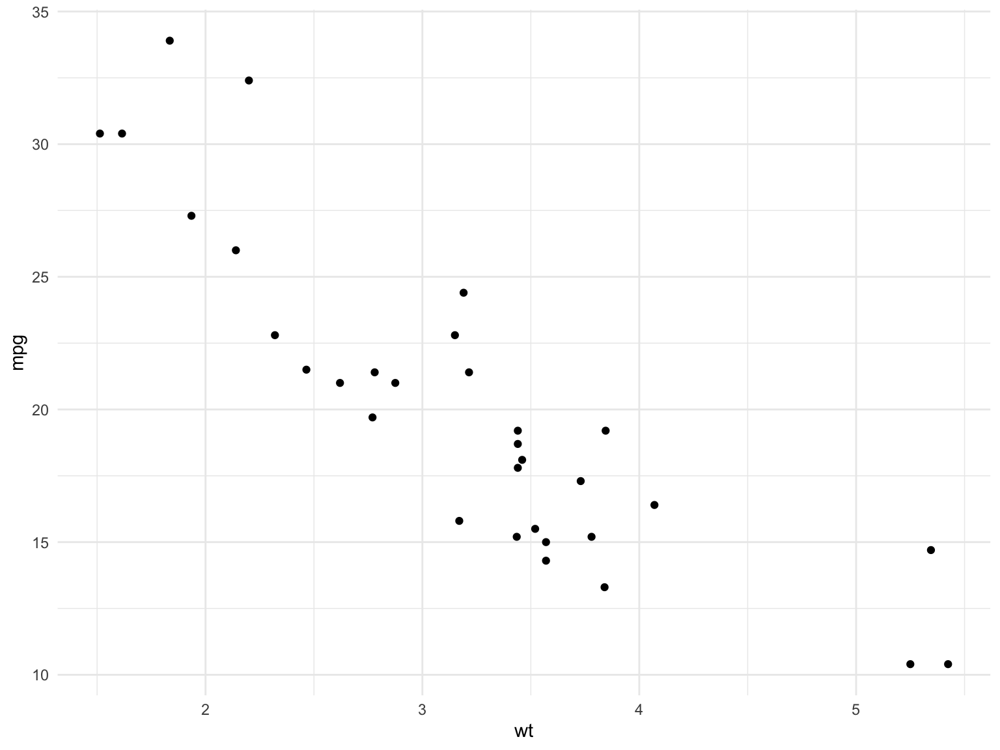

# Start with data and aesthetics
ggplot(data = mtcars, aes(x = wt, y = mpg)) +
# Add a geometry layer
geom_point()
After completing this chapter, you will be able to:
ggplot2 is R’s most popular visualization package, built on the “Grammar of Graphics” framework. Just as grammar provides rules for constructing sentences, the grammar of graphics provides rules for constructing statistical graphics.
Every ggplot2 visualization is built from these components:
| Component | Description | Example |
|---|---|---|
| Data | The dataset being visualized |
mtcars, iris
|
| Aesthetics | Mappings from data to visual properties | x, y, color, size, shape |
| Geometries | Visual elements representing data | points, lines, bars |
| Facets | Subplots for data subsets | panels by category |
| Statistics | Transformations of data | binning, smoothing |
| Coordinates | The coordinate system | Cartesian, polar |
| Themes | Non-data visual elements | fonts, backgrounds |

ggplot2 builds plots incrementally using the + operator:
# Start with data and aesthetics
ggplot(data = mtcars, aes(x = wt, y = mpg)) +
# Add a geometry layer
geom_point()
Let’s break this down:
ggplot() initializes the plot with dataaes() maps variables to visual properties (aesthetics)geom_point() adds the point geometryMost ggplot2 code follows this template:
geom_point()
Scatter plots show relationships between two continuous variables:
Map additional variables to aesthetics:
geom_histogram()
Histograms show the distribution of a single continuous variable:
geom_freqpoly()
Frequency polygons are an alternative to histograms, showing counts as lines instead of bars. They’re especially useful for comparing multiple distributions:
geom_density()
Smoothed version of histograms:
geom_boxplot()
Box plots show distribution summaries and are excellent for comparisons:
ggplot(mtcars, aes(x = factor(cyl), y = mpg, fill = factor(cyl))) +
geom_boxplot(show.legend = FALSE) +
labs(
title = "Fuel Efficiency by Cylinder Count",
x = "Number of Cylinders",
y = "Miles per Gallon"
)

geom_bar() and geom_col()
Use geom_bar() for counts and geom_col() for values:
ggplot(diamonds, aes(x = cut, fill = cut)) +
geom_bar(show.legend = FALSE) +
labs(
title = "Diamond Count by Cut Quality",
x = "Cut",
y = "Count"
)
position = "dodge"
When you have two categorical variables, use position = "dodge" to place bars side-by-side:
coord_flip()
For long category names or many categories, flip the coordinates to make labels readable:
geom_line()
Line plots are ideal for time series or connected observations:
# Create sample time series data
set.seed(42)
time_data <- tibble(
day = 1:30,
value = cumsum(rnorm(30))
)
ggplot(time_data, aes(x = day, y = value)) +
geom_line(color = "darkblue", linewidth = 1) +
geom_point(color = "darkblue") +
labs(
title = "Simulated Time Series",
x = "Day",
y = "Value"
)
Layer multiple geoms to create richer visualizations:
ggplot(mtcars, aes(x = wt, y = mpg)) +
geom_point(aes(color = factor(cyl)), size = 3) +
geom_smooth(method = "lm", se = TRUE, color = "black") +
labs(
title = "Weight vs. MPG with Linear Trend",
x = "Weight (1000 lbs)",
y = "Miles per Gallon",
color = "Cylinders"
)Faceting creates separate panels for subsets of data.
facet_wrap() for One Variablefacet_grid() for Two Variablesggplot(mtcars, aes(x = wt, y = mpg)) +
geom_point() +
facet_grid(am ~ cyl, labeller = labeller(
am = c("0" = "Automatic", "1" = "Manual"),
cyl = c("4" = "4 cyl", "6" = "6 cyl", "8" = "8 cyl")
)) +
labs(
title = "MPG by Weight, Transmission, and Cylinders",
x = "Weight (1000 lbs)",
y = "Miles per Gallon"
)ggplot2 includes several built-in themes:
library(patchwork)
p <- ggplot(mtcars, aes(x = wt, y = mpg)) +
geom_point() +
labs(title = "")
p1 <- p + theme_gray() + labs(title = "theme_gray (default)")
p2 <- p + theme_minimal() + labs(title = "theme_minimal")
p3 <- p + theme_classic() + labs(title = "theme_classic")
p4 <- p + theme_bw() + labs(title = "theme_bw")
(p1 + p2) / (p3 + p4)Good data visualization communicates clearly and honestly. Follow these principles:
Don’t hide your data behind summaries when individual points are informative:
Humans are best at comparing positions and lengths. Angles (pie charts) and areas are harder to judge:
# Create summary data
cut_summary <- diamonds |>
count(cut) |>
mutate(pct = n / sum(n) * 100)
ggplot(cut_summary, aes(x = reorder(cut, pct), y = pct, fill = cut)) +
geom_col(show.legend = FALSE) +
coord_flip() +
labs(
title = "Diamond Distribution by Cut",
x = "Cut Quality",
y = "Percentage"
) +
theme_minimal()
Pie charts make comparisons difficult because humans are poor at judging angles. Use bar charts instead for categorical comparisons.
By default, R orders categorical variables alphabetically, which is rarely meaningful. Use reorder() to order by a numeric value instead:
# Calculate mean mpg by manufacturer
mtcars_summary <- mtcars |>
mutate(car = rownames(mtcars)) |>
slice_head(n = 10) |>
mutate(car = reorder(car, mpg)) # Order car names by mpg values
ggplot(mtcars_summary, aes(x = car, y = mpg)) +
geom_col(fill = "steelblue") +
coord_flip() +
labs(
title = "Fuel Efficiency by Car (Ordered)",
x = NULL,
y = "Miles per Gallon"
)
The reorder() function takes a categorical variable and a numeric variable, then reorders the categories by the numeric values. You can also specify a summary function when there are multiple values per category:
When using bars, start the y-axis at zero. Otherwise, you distort relative magnitudes:
# Example data
sales <- tibble(
quarter = c("Q1", "Q2", "Q3", "Q4"),
revenue = c(100, 105, 110, 108)
)
ggplot(sales, aes(x = quarter, y = revenue)) +
geom_col(fill = "coral") +
labs(
title = "Quarterly Revenue (Starting at Zero)",
x = "Quarter",
y = "Revenue"
) +
theme_minimal()
About 8% of men and 0.5% of women have color vision deficiency. Use colorblind-friendly palettes:
# Colorblind-friendly colors
cb_palette <- c("#E69F00", "#56B4E9", "#009E73", "#F0E442",
"#0072B2", "#D55E00", "#CC79A7")
ggplot(mtcars, aes(x = wt, y = mpg, color = factor(cyl))) +
geom_point(size = 3) +
scale_color_manual(values = cb_palette) +
labs(
title = "Using a Colorblind-Friendly Palette",
color = "Cylinders"
) +
theme_minimal()
The viridis color scales (scale_color_viridis_d(), scale_fill_viridis_c()) are designed to be colorblind-friendly and perceptually uniform.
Remove unnecessary visual elements that don’t convey information:
Slope charts effectively show changes between two time points:
# Sample before-after data
change_data <- tibble(
subject = rep(LETTERS[1:5], 2),
time = rep(c("Before", "After"), each = 5),
value = c(10, 12, 8, 15, 11, 14, 15, 11, 18, 13)
)
ggplot(change_data, aes(x = time, y = value, group = subject)) +
geom_line(aes(color = subject), linewidth = 1) +
geom_point(aes(color = subject), size = 3) +
labs(
title = "Before-After Comparison",
x = NULL,
y = "Value"
) +
theme_minimal()Use ggsave() to export plots:
# Create a plot
p <- ggplot(mtcars, aes(x = wt, y = mpg)) +
geom_point() +
theme_minimal()
# Save as PNG (good for web)
ggsave("my_plot.png", plot = p, width = 8, height = 6, dpi = 300)
# Save as PDF (good for publications)
ggsave("my_plot.pdf", plot = p, width = 8, height = 6)
# Save as SVG (good for editing)
ggsave("my_plot.svg", plot = p, width = 8, height = 6)ggplot2 provides a powerful and consistent framework for data visualization:
Best practices for effective visualization:
To master data visualization in R:
For publication-quality figures:
Exercise 1: Basic Scatter Plot
Using the iris dataset: 1. Create a scatter plot of Sepal.Length vs Sepal.Width 2. Color points by Species 3. Add appropriate labels and a title
Exercise 2: Distribution Visualization
Using the diamonds dataset: 1. Create a histogram of carat 2. Experiment with different bin widths 3. Add a density curve overlay
Exercise 3: Grouped Comparisons
Using mtcars: 1. Create box plots of mpg grouped by cyl 2. Add jittered points to show individual observations 3. Use a colorblind-friendly palette
Exercise 4: Faceted Plot
Using the diamonds dataset: 1. Create a scatter plot of carat vs price 2. Facet by cut 3. Add a smoothed trend line to each panel
Exercise 5: Publication-Ready Figure
Create a polished figure using any dataset that includes: 1. Meaningful title and axis labels 2. A clean theme 3. Appropriate colors 4. No chart junk 5. Save it as a high-resolution PNG